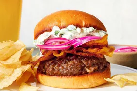

Burger

Description
These are the best burgers I've ever had. My mother made a version of these and I changed it a little.
Instead of jalapeno peppers you can add anything or just do the cream cheese. Trust me,
your family and/or guests will beg for the recipe! Serve on buns with your favorite toppings.
Ingredients
- 2 cups seeded and chopped jalapeno pepper
- 2 (8 ounce) packages cream cheese, softened
- 2 pounds ground beef
- 8 (2 ounce) hamburger buns, split
Steps
- Preheat a grill for medium heat. When hot, lightly oil the grate.
- Stir together jalapenos and cream cheese in a small bowl.
- Divide ground beef into 16 portions. Pat out each one to a thickness of 1/4 inch.
- Spoon some cream cheese mixture onto the center of 1/2 of the patties. Top with the remaining patties, and press the edges together to seal.
- Cook on the preheated grill until well done, about 10 minutes per side. Don't press down on the burgers as they cook, or the cheese will ooze out.